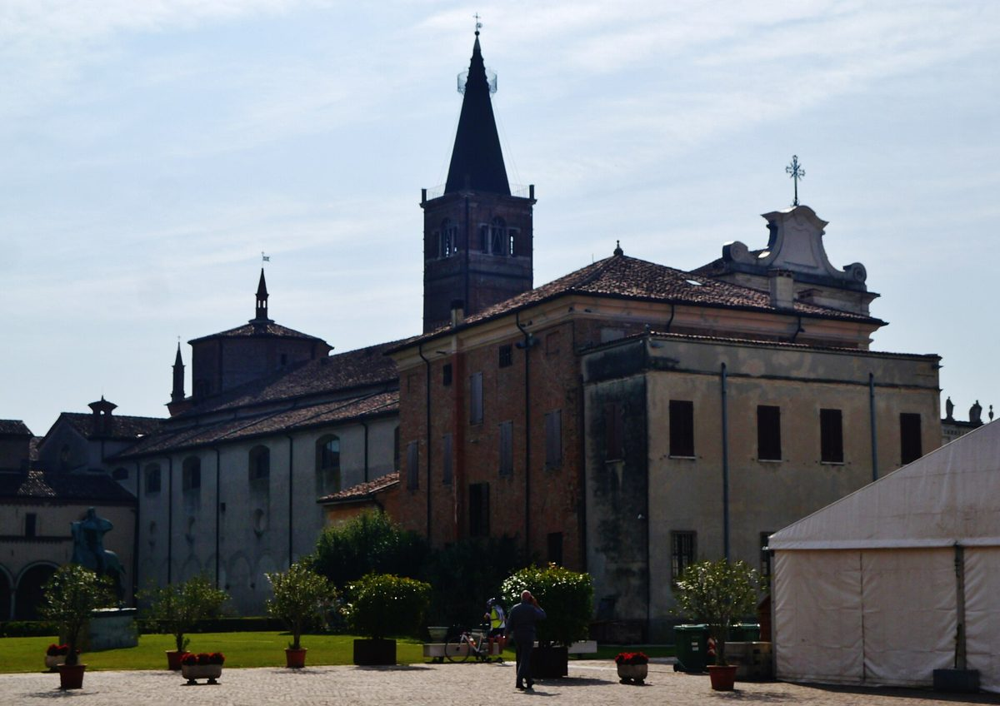

이탈리아 산베네데토포, 버려진 공업용지 1ha에 1MW 태양광 준공…개인 54명·시청 48곳 든 재생에너지공동체에 전기

민간 소유 지상 발전소, 9월 말 계통 연결…공동체 발전원 4곳 중 하나, 소비자 회원 106곳 공동체는 전국 단위 솔라 밸리 가입하고 회원 늘려 비용 낮출 계획
이탈리아 롬바르디아주 만토바도의 소도시 산베네데토포에서 10월 24일, 쓰이지 않던 공업용지 약 1ha에 들어선 1MW 규모 지상 태양광 발전소가 준공식을 열었다. 비아 볼타 공업지역에 지어진 이 발전소는 민간 기업 RR솔루션스 소유로 9월 말 전력망에 연결됐으며, 부지를 고른 때부터 가동까지 3년이 걸렸다. 발전소는 2025년 5월 26일 결성된 산베네데토포 재생에너지공동체(CER)의 발전원 4곳 가운데 하나이며, 이 공동체는 전국에서 활동하는 공동체 '솔라 밸리'에 가입해 있다. 공동체의 소비자 회원은 개인 54명과 시청 48곳, 소상공인 법인 4곳 등 모두 106곳으로, 회원을 늘려 비용을 낮추려고 준공 전날 가입 설명회를 열었다. 공동체는 협회 형태로 운영되는데, 마르코 자바치 생산활동 담당 집행위원은 들고 나기 쉽고 설립 비용이 적어 작은 지자체에 알맞은 방식으로 전국지방자치단체협의회(ANCI)도 권한다고 설명했다. 로베르토 라자냐 시장은 농지를 건드리지 않고 공공과 민간이 함께 참여해 이룬 "중요한 전환"이라고 평가했다.
시민에너지 관점
1MW 발전소 하나가 개인·시청·소상공인 106곳이 함께 쓰는 공동체의 전원이 되고, 그 땅이 농지가 아니라 버려진 공업용지라는 점은 부지 갈등을 피하면서 지역에 전기를 나누는 길을 보여 준다. 작은 지자체가 이런 공동체를 꾸리기엔 행정 부담이 크다는 우려가 있지만, 협회 형태로 설립 비용을 낮추고 전국 단위 공동체에 들어가는 방식이 하나의 답이 되고 있다. 다만 이 발전소는 민간 소유여서 주민은 전기를 나눠 쓰는 회원에 머무는데, 주민이 출자해 설비까지 함께 소유해야 요금 절감을 넘어 발전 수익도 지역에 남는다. 국내에서도 산업단지 안 빈 땅과 지붕을 시민·주민이 소유하는 공동체 발전소에 먼저 내주고, 지자체가 회원으로 함께 참여하는 길을 열어야 한다.
출처: 가체타 디 만토바(Gazzetta di Mantova) 2026-10-24 Oriana Caleffi 원문 보기
イタリアのサン・ベネデット・ポー、使われていない工業用地1haに1MWの太陽光が完成…個人54人・市の48カ所が加わる再エネ共同体に電気
民間所有の地上設置発電所、9月末に系統連系…共同体の電源4カ所の一つ、消費者会員106カ所の共同体は全国規模のソーラー・バレーに加盟し、会員を増やしてコスト削減へ
イタリア・ロンバルディア州マントヴァ県の小都市サン・ベネデット・ポーで10月24日、使われていなかった工業用地約1haに建てられた出力1MWの地上設置型太陽光発電所の完成式が開かれた。ヴォルタ通りの工業地区にあるこの発電所は民間企業RRソリューションズの所有で、9月末に送電網に接続され、用地を選んでから稼働まで3年かかった。発電所は2025年5月26日に結成されたサン・ベネデット・ポー再生可能エネルギー共同体（CER）の4つの電源の一つで、この共同体は全国で活動する共同体「ソーラー・バレー」に加盟している。共同体の消費者会員は個人54人、市の48カ所、小規模事業者の法人4社の計106カ所で、会員を増やしてコストを下げるため、完成式の前日に加入説明会を開いた。共同体は協会形式で運営されており、生産活動担当のマルコ・ジャヴァッツィ市参事は、加入・脱退がしやすく設立費用も少ないため小さな自治体に適した方式で、全国自治体連合（ANCI）も勧めていると説明した。ロベルト・ラザーニャ市長は、農地に手をつけず官民が共に参加して実現した「重要な転換」だと評価した。
市民エネルギーの視点
1MWの発電所一つが個人・市・小規模事業者の106カ所が共に使う共同体の電源となり、その土地が農地ではなく使われなくなった工業用地であることは、用地をめぐる対立を避けながら地域で電気を分かち合う道を示している。小さな自治体がこうした共同体を運営するには行政の負担が大きいとの懸念もあるが、協会形式で設立費用を抑え全国規模の共同体に加わる方式が一つの答えになっている。ただしこの発電所は民間所有で、住民は電気を分け合う会員にとどまっており、住民が出資して設備まで共に所有してこそ、料金の節約を超えて発電収益も地域に残る。韓国でも産業団地の空き地や屋根を市民・住民が所有する共同体発電所にまず提供し、自治体が会員として共に参加する道を開くべきだ。
出典: ガゼッタ・ディ・マントヴァ（Gazzetta di Mantova） 2026-10-24 Oriana Caleffi 原文を読む
意大利圣贝内代托波在闲置工业用地1公顷上建成1MW光伏电站…向有54名个人和48处市政用户的可再生能源社区供电
私人所有的地面电站9月底并网…是社区4个电源之一，拥有106家消费会员的社区已加入全国性的Solar Valley，计划扩大会员以降低成本
意大利伦巴第大区曼托瓦省小城圣贝内代托波（San Benedetto Po）10月24日为一座建在约1公顷闲置工业用地上的1MW地面光伏电站举行落成仪式。这座位于沃尔塔街（via Volta）工业区的电站归私营企业RR Solutions所有，于9月底接入电网，从选定地块到投运用了3年。电站是2025年5月26日成立的圣贝内代托波可再生能源社区（CER）的4个电源之一，该社区已加入在全国范围活动的社区"Solar Valley"。社区的消费会员共106家，包括54名个人、48处市政用户和4家小商户法人；为扩大会员、降低成本，社区在落成前一天举办了入会说明会。社区以协会形式运营，负责生产活动的市政委员Marco Giavazzi介绍说，这种形式进出方便、设立成本低，适合小型市镇，意大利全国市镇联合会（ANCI）也推荐采用。市长Roberto Lasagna评价说，这是不占用农地、由公共和私人共同参与实现的"重要转型"。
市民能源视角
一座1MW电站成为个人、市政和小商户共106家共同使用的社区电源，而且用的是闲置工业用地而非农地，这展示了一条既避免用地冲突又能在本地分享电力的道路。有人担心小型市镇组建这类社区行政负担太重，但以协会形式降低设立成本、加入全国性社区的做法正在成为一种答案。不过这座电站为私人所有，居民只是分享电力的会员；只有居民出资共同拥有设备，留在本地的才不只是电费节省，还有发电收益。韩国也应把产业园区内的空地和屋顶优先提供给由市民和居民拥有的社区电站，并为地方政府作为会员共同参与开辟道路。
来源: 《Gazzetta di Mantova》 2026-10-24 Oriana Caleffi 查看原文
San Benedetto Po in Italy opens 1 MW solar plant on 1 hectare of disused industrial land, supplying a renewable energy community of 54 residents and 48 municipal users
The privately owned ground-mounted plant was connected to the grid at the end of September and is one of four sources for a 106-member community that belongs to the nationwide Solar Valley and aims to grow to cut costs
San Benedetto Po, a small town in the Lombardy province of Mantua, inaugurated on Oct. 24 a 1 MW ground-mounted solar plant built on about one hectare of disused industrial land. The plant in the Via Volta industrial area is owned by the private company RR Solutions, was connected to the grid at the end of September and took three years from site selection to start-up. It is one of four generation sources for the San Benedetto Po renewable energy community (CER), founded on May 26, 2025, which belongs to Solar Valley, a community active across the country. The community has 106 consumer members, including 54 individuals, 48 municipal users and four small businesses, and held an information session the day before the inauguration to sign up more members and bring costs down. It is organised as an association, a form that Marco Giavazzi, the town's councillor for productive activities, said is easy to join and leave and cheap to set up, suiting small municipalities, and is also recommended by the national association of Italian municipalities (ANCI). Mayor Roberto Lasagna called it "an important reconversion" achieved without touching farmland and through cooperation between the public and private sectors.
Citizen Energy View
A single 1 MW plant powering a community shared by 106 individuals, municipal users and small businesses, built on disused industrial land rather than farmland, shows a way to share electricity locally while avoiding land-use conflicts. There are concerns that running such a community is too heavy an administrative load for a small town, but setting it up cheaply as an association and joining a nationwide community is proving to be one answer. Still, the plant is privately owned and residents remain members who share its power; only when they invest in and co-own the equipment will generation revenue, not just bill savings, stay in the community. Korea, too, should offer vacant land and rooftops in industrial parks first to community plants owned by citizens and residents, and open the way for local governments to join them as members.
Source: Gazzetta di Mantova 2026-10-24 Oriana Caleffi Read the original